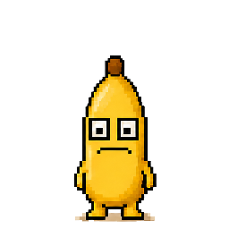
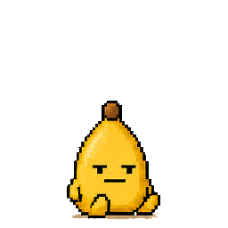
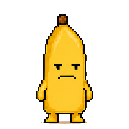
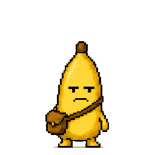

a journal with a banana in it
your life journal, kept for good.
journal on paper, out loud or on your phone, and skriblio keeps it all in one place. the pages you love most hang on a memory tree that grows with you.
pick a plan and the first two weeks are free. after that it's $49.99 a year or $9.99 a month, and both plans include the desktop companion.
journal your way.
photograph a page from your paper journal, record a voice note or type a page in the app. it all counts as journaling, and it all goes into the same vault.
- on papertap 'scan' and take a photo of the page. skriblio can type up your handwriting, so you can search it later.
- out loudtap 'voice' and talk, and the recording is kept just as you said it.
- on your phonetap 'journal' and type. every new page starts with a question, in case you're stuck.

your memory tree
the pages you love grow into a tree.
tap the heart on a page and it hangs on your memory tree. it starts as a small sapling and grows as you add more. it's yours for life, so years from now you can climb back through the months.

never stuck for what to journal about.
every new page starts with a question, and the dice swaps it for another one. journal school, in the 'you' tab, shows you the old ways people kept journals, from roman emperors to da vinci's notebooks. you can try each one on a page.

leave it long enough and it goes bananas.
your banana lives on your home screen and notices the days you journal.
skip a few days and it gets restless, then it runs about, bounces off the walls and stands on its head.
journal anything at all and it calms straight down. there are no notifications and no streak to lose.

pick your banana
each one has its own habits, and you can swap yours for another whenever you like.
- coathands in the peel

dalesquare glasses, blank stare
plopprefers the floor- huskhalf out already

bricka plantain, and not cute
skribliocarries the mail bag- moethe monk
 nedround, and has had enough
nedround, and has had enough- shushthe librarian
 kitlying down, on purpose
kitlying down, on purpose
on your home screen, and on your computer.
add the widget and your banana sits on your home screen, so you can see what it's up to without opening the app. on a mac or a windows computer, the desktop companion puts it on your screen while you work.
both come with your plan. open skriblio.com/desktop on your computer to get the desktop companion.

your journal stays yours.
your banana only knows which days you journaled, and it never sees what's on the page. nothing in your journal is sold or used for ads, and no model is trained on it.
- lock itturn on 'face id lock' in the 'you' tab, or 'fingerprint lock' on android.
- take it with youexport everything as a text file, a pdf or a zip whenever you like, with or without a plan.
- delete ittap 'delete account' in the 'you' tab, and everything is deleted straight away.

the first two weeks are free.
pick a plan in the app, and nothing is charged until the two weeks are up. if you cancel before then, you pay nothing.
-
a year
$49.99
it's billed once a year, which works out cheaper than paying monthly.
-
a month
$9.99
you get the same app, billed each month.
both plans include everything, from the memory tree and journal school to the widgets and the desktop companion.
questions
what's skriblio
it's a life journal for your paper notebook and your phone. you can photograph handwritten pages, record voice notes and type pages, and a pixel banana keeps you company.
do i need a paper journal
you don't need one. typing a page or recording a voice note counts just the same, but if you keep a paper journal, skriblio keeps its pages too.
do i have to journal every day
no, and there's no streak to lose. after a few quiet days your banana goes bananas, and as soon as you journal anything at all, it calms straight down.
what does the banana know about me
only which days you journaled. it never knows what's on the page.
is my journal kept for good
yes, for as long as you have an account. it's kept safely online, so nothing is lost when you change phones, and you can export all of it whenever you like.
is there a desktop app
yes, the desktop companion puts your banana on a mac or windows screen while you work, and it comes with both plans. open skriblio.com/desktop on your computer to get it.
how does the free trial work
the first time you pick a plan, the first two weeks are free and nothing is charged until they end. after that the plan renews by itself until you cancel it.
how do i cancel
apple or google handle the subscription. on an iphone, open settings, tap your name, then 'subscriptions'. on android, open the play store, tap your profile, then 'payments and subscriptions'.
who can use skriblio
it's for adults, 18 and over.
anything else is on the support page.